1.3. Adding 2D Forming operations
This example takes you through the basic steps to setup a simple resistance heating. Existing features of the user interface are referenced here which are constantly improved as we move to higher versions of Deform, to make the setup process more convenient and efficient to use.
This case is a 2d axis-symmetric case involving two plates, 4mm thick and two electrodes. Top plate has a diameter of 300mm, and bottom plate has diameter of 200mm (see Fig. 2DRHL1.1.). The two plates have different thermal electrical resistance properties and the electrodes are subjected to a voltage of 20 v, (grounded on one side, i.e zero voltage) to trigger local heating in the plates (see Fig. 2DRHL1.2.). Please note that the process data used in this example is for illustration purpose only. (3D images indicated here have been documented using 3D Viewer for this axisymmetric analysis).
Sample keyword file available in the release ‘Labs’ folder can be taken as the basis. Only the essential data needed for resistance heating are discussed here and this document assumes user is fairly conversant to the Deform Preprocessor.
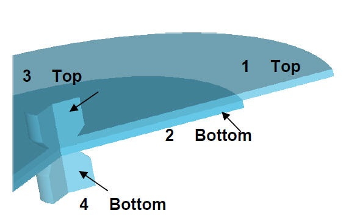
Location of the plates and electrodes
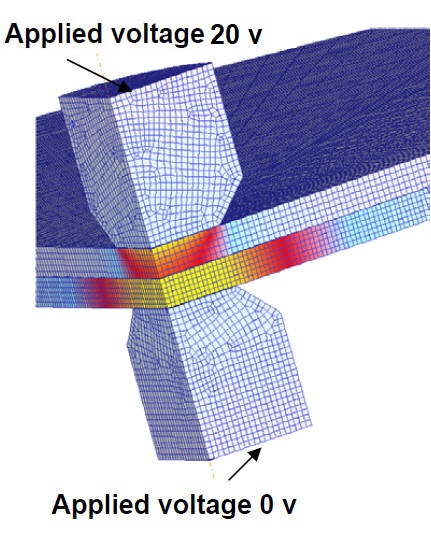
Local heating due voltage across electrodes
On a Windows machine, go to the  button select DEFORM-v1x.xxx (.xxx indicates version number E.g. v14.0.2)
and select DEFORM GUI Main vxx.xx from the menu. The DEFORM GUI Main window will appear, as shown below Fig. 2DRHL1.3.
button select DEFORM-v1x.xxx (.xxx indicates version number E.g. v14.0.2)
and select DEFORM GUI Main vxx.xx from the menu. The DEFORM GUI Main window will appear, as shown below Fig. 2DRHL1.3.
DEFORM GUI main
Create a new problem either by selecting File  New Problem or by clicking the New Problem
New Problem or by clicking the New Problem  icon. The Problem Setup window will appear as shown in Fig. 2DRHL1.3. Select "Integrated Manufacturing Process"
radio button and unit system as "SI" radio button in unit field. Define Problem Name as "Resistance_Heating_lab1" and make sure the “Show option dialog” check box is turned on
(if we do not turn on the “Show option dialog” check box, then we will not get the New Project dialog). Then click on
icon. The Problem Setup window will appear as shown in Fig. 2DRHL1.3. Select "Integrated Manufacturing Process"
radio button and unit system as "SI" radio button in unit field. Define Problem Name as "Resistance_Heating_lab1" and make sure the “Show option dialog” check box is turned on
(if we do not turn on the “Show option dialog” check box, then we will not get the New Project dialog). Then click on  button to open a new problem using the Deform
Integrated Manufacturing Process.
button to open a new problem using the Deform
Integrated Manufacturing Process.
Problem type selection window
Multiple operation wizard will open along with project naming window, defined problem name is updated as ‘Resistance_Heating_lab1’ as the project name and selected unit system updated. Confirm that First operation check box is unchecked
as we will add operation later and use the default (home) directory. Click  to add project.
to add project.
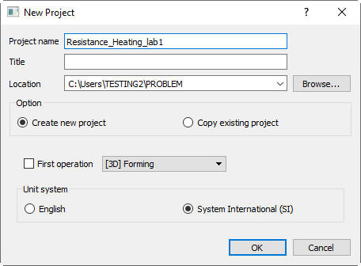
MO wizard new Project
Multiple Operation wizard will open. Add 2D Forming operation from the Explorer Operations list. Add the operation by clicking on  button next to 2D Forming or user can also add
by drag and drop into the Operation Editor. (see Fig. 2DRHL1.6.)
button next to 2D Forming or user can also add
by drag and drop into the Operation Editor. (see Fig. 2DRHL1.6.)
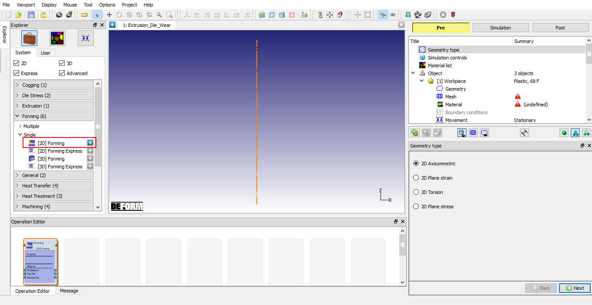
Added 2D Forming operation into operation editor
In this lab we will be using Axisymmetric geometries, so select 2D Axisymmetric radio button from geometry type page, then click on  . (see Fig. 2DRHL1.7.)
. (see Fig. 2DRHL1.7.)
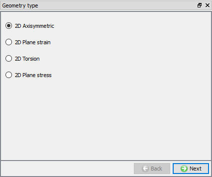
2D Axisymmetric Geometry type selection
In this lab we will be showing how to setup a resistance heating problem. So we will turn on the Heating under Heat transfer and we will select the Resistance in the heating pull down menu. Also we have to turn off the Deformation check box. (see Fig. 2DRHL1.8.)
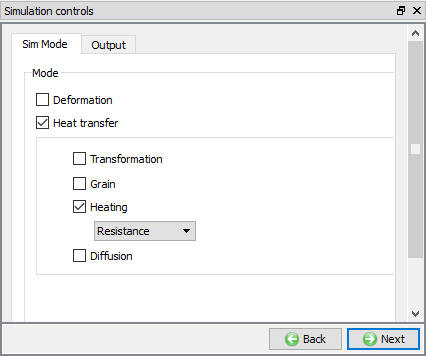
Simulation control window
In this lab, we will import the material data from keyfiles. Click on  (Import material data from a file) button and import ‘New Material1.key’
file from '2D\LABS\Resistance_Heatting' directory. Select "New Material1" in Material selection popup and click on
(Import material data from a file) button and import ‘New Material1.key’
file from '2D\LABS\Resistance_Heatting' directory. Select "New Material1" in Material selection popup and click on  button (See Fig. 2DRHL1.9.).
In material list , "New Material1" material will be added as shown in Fig. 2DRHL1.9. Similarly,
import material from 'New Material2.key' and 'New Material3.key' files. After importing the material data from keyfile, Material list will be displayed as shown in Fig. 2DRHL1.9.
button (See Fig. 2DRHL1.9.).
In material list , "New Material1" material will be added as shown in Fig. 2DRHL1.9. Similarly,
import material from 'New Material2.key' and 'New Material3.key' files. After importing the material data from keyfile, Material list will be displayed as shown in Fig. 2DRHL1.9.
Click on  to go New Material1 Property page, check the Elastic Properties (See Fig. 2DRHL1.10.),
Thermal Properties (see Fig. 2DRHL1.11. ) and Electrical Properties (see Fig. 2DRHL1.12. ). Similarly, check the Elastic properties, Thermal Properties and Elec./Mag. Properties of New Material2 and New Material3 keyfiles. Click on
to go New Material1 Property page, check the Elastic Properties (See Fig. 2DRHL1.10.),
Thermal Properties (see Fig. 2DRHL1.11. ) and Electrical Properties (see Fig. 2DRHL1.12. ). Similarly, check the Elastic properties, Thermal Properties and Elec./Mag. Properties of New Material2 and New Material3 keyfiles. Click on  until Object page.
until Object page.
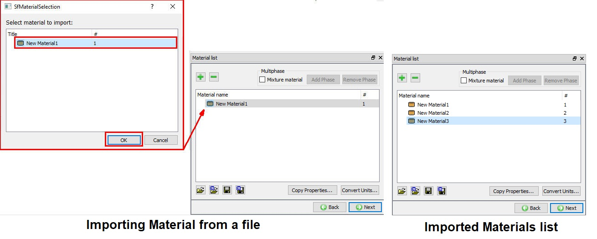
Importing New Materials
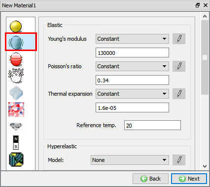
Elastic Properties of New Material 1
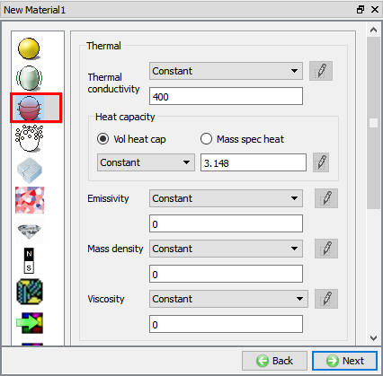
Thermal Properties of New Material 1
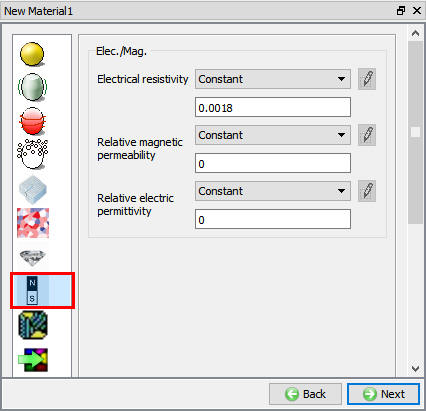
Electrical resisitivity of New Material 1
For this operation we required four objects, for two plates and two electrodes hence in Object window add four objects using  button (see Fig. 2DRHL1.13.),
then click on
button (see Fig. 2DRHL1.13.),
then click on  .
.
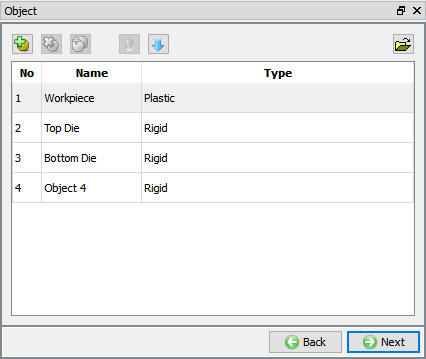
Adding Object Window
In Workpiece window, change the Object name to Plate1 and select Object type as Elastic as shown in Fig. 2DRHL1.14.,
Click on  .
.
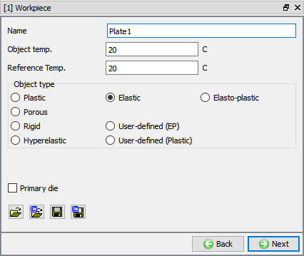
Plate1 object window
In Geometry page, click on  ( Load Geometry from Library) button and import ‘resistance_heat_bottom_plate.GEO’ as shown in Fig. 2DRHL1.15. The geometry for Plate1 is located in DEFORM installation folder 2D\LABS\Resistance_Heatting directory.
( Load Geometry from Library) button and import ‘resistance_heat_bottom_plate.GEO’ as shown in Fig. 2DRHL1.15. The geometry for Plate1 is located in DEFORM installation folder 2D\LABS\Resistance_Heatting directory.
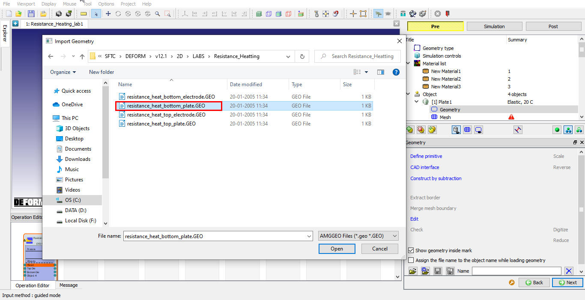
Geometry importing
Generate the mesh using 400 elements (see Fig. 2DRHL1.16.). Complete range of meshing options
are also available in expert mode ( ), if user needs to have more control on the mesh generated. Click on
), if user needs to have more control on the mesh generated. Click on  to
continue.
to
continue.
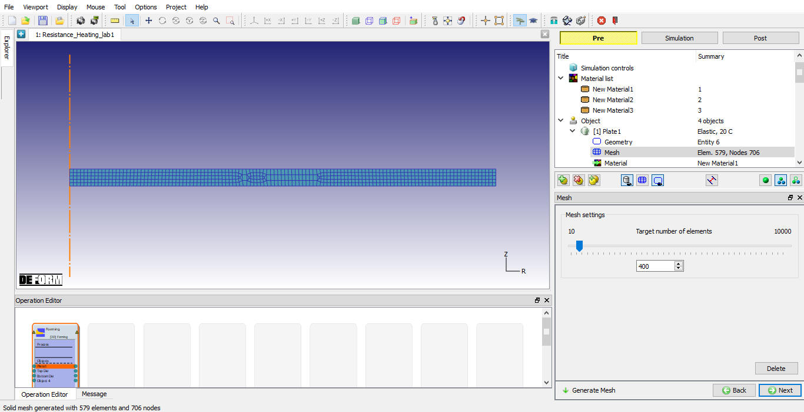
Plate1 Mesh generation
To assign the material for the Plate 1 select the New Material3 from the material window. This can be done as shown in Fig. 2DRHL1.17. Click on  to continue.
to continue.
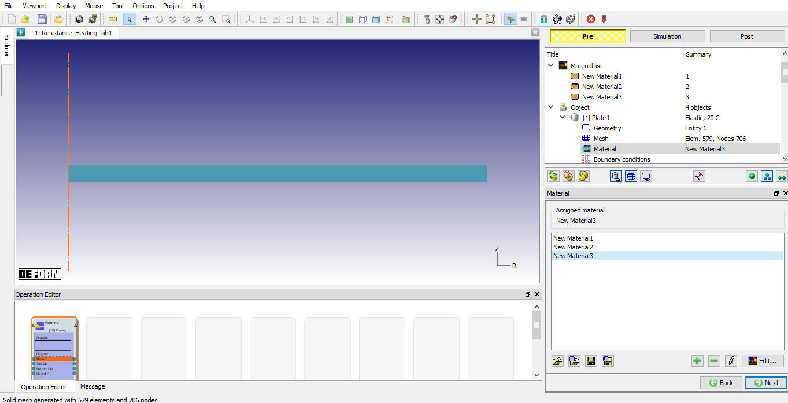
Object material selection window
In BCC page, check the default assigned Heat exchange with Environment BCC to the entire outer surface of the plate (which does not include the centerline since these nodes are inside the object) by clicking on Defined under Heat exchange with Environment.
Default BCC are assigned automatically due to selection of problem type as axisymmetric (see Fig. 2DRHL1.18.).
Click on  until Top Die page.
until Top Die page.
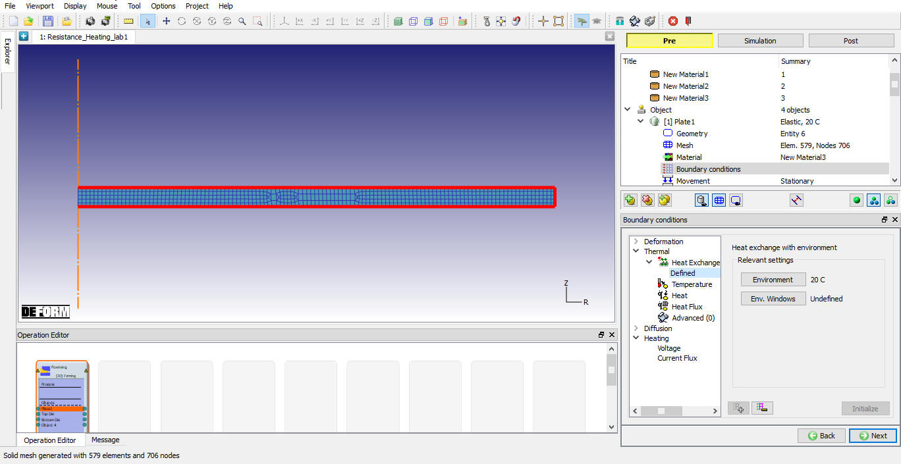
Boundary conditions window
In Top die window, change the Object Name to Plate2 and select Object type as Elastic. Click on  to geometry page.
to geometry page.
Similar to the plate1, in Geometry page, click on  ( Load Geometry from Library) button and import ‘resistance_heat_top_plate.GEO’. The geometry
for Plate2 is located in DEFORM installation folder 2D\LABS\Resistance_Heatting directory.
( Load Geometry from Library) button and import ‘resistance_heat_top_plate.GEO’. The geometry
for Plate2 is located in DEFORM installation folder 2D\LABS\Resistance_Heatting directory.
In mesh generation page, generate the mesh for the plate2 with the 400 elements. Click on  to material page.
to material page.
To assign the material for the Plate2 select the New Material2 from the material window. Click on  to continue.
to continue.
In BCC page, check the default assigned Heat exchange with Environment BCC to the entire outer surface of the plate (which does not include the centerline since these nodes are inside the object) by clicking on Defined under Heat exchange with Environment.
Click on  until bottom Die page.
until bottom Die page.
In Bottom die window, change the Object name to Electrode1 and select Object type as Elastic. Click on  to continue.
to continue.
Similar to the plate1, in Geometry page, click on  ( Load Geometry from Library) button and import ‘resistance_heat_bottom_electrode.GEO’.
The geometry for Electrode1 is located in DEFORM installation folder 2D\LABS\Resistance_Heatting directory.
( Load Geometry from Library) button and import ‘resistance_heat_bottom_electrode.GEO’.
The geometry for Electrode1 is located in DEFORM installation folder 2D\LABS\Resistance_Heatting directory.
In mesh generation page, generate the mesh for the Electrode1 with the 400 elements. Click on  to assign material.
to assign material.
To assign the material for the Electrode1 select the New Material1 from the material window. Click on  to continue.
to continue.
In BCC page, We need to apply specified edge Voltage BCC for the bottom face, so select the Voltage BCC branch under Heating BCC type, select bottom left corner of the object as start point and bottom right corner of
the object as the end point. Nodes/edge will be highlighted. Then input the Voltage value of 0 v, and click on  icon to confirm
the selection and apply these boundary conditions. (see Fig. 2DRHL1.19.)
icon to confirm
the selection and apply these boundary conditions. (see Fig. 2DRHL1.19.)
We need to apply specified edge fixed temperature BCC's for the bottom face, so select the Temperature BCC branch under Thermal BCC type, select bottom left corner of the object as start point and bottom right corner of the object as the end point.
Nodes/edge will be highlighted. Then input the Temperature value as 20 C and click on  icon to confirm the selection and apply these boundary conditions.
(see Fig. 2DRHL1.20.) For remaining surface of the object (excluding the axis side) we define ‘Heat Exchange
with Environment’ following the same procedures of boundary node selection and BCC application. Click on
icon to confirm the selection and apply these boundary conditions.
(see Fig. 2DRHL1.20.) For remaining surface of the object (excluding the axis side) we define ‘Heat Exchange
with Environment’ following the same procedures of boundary node selection and BCC application. Click on  until object4 page.
until object4 page.
Defining Voltage BCC
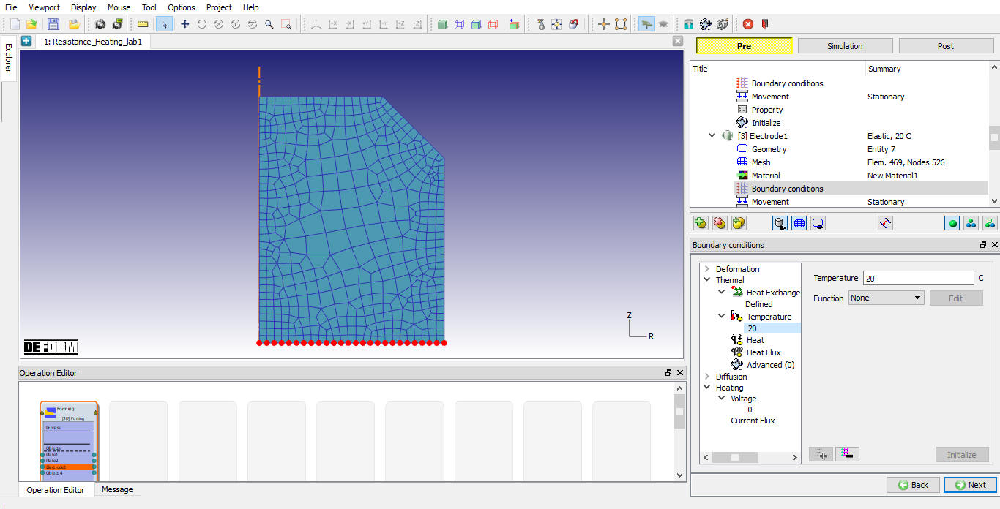
Defining temperature BCC
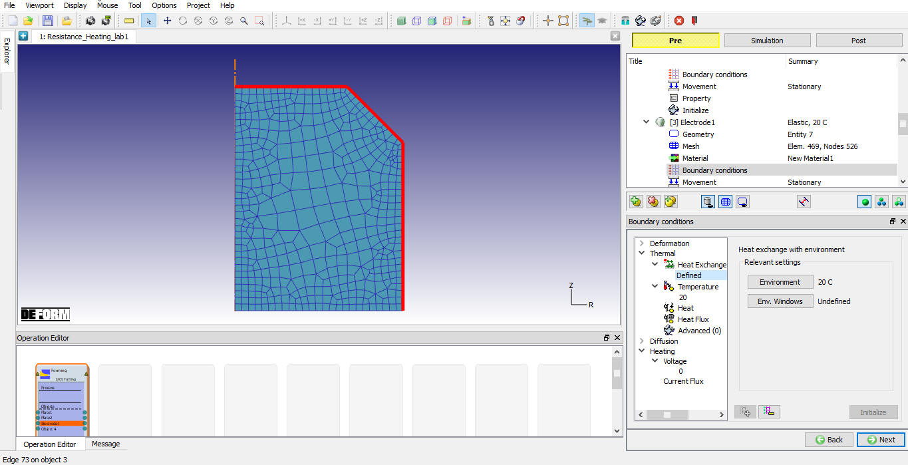
Defining Heat exchange with environment BCC
In object4 window, change the Object name to Electrode2 and select Object type as Elastic.Click on  to geometry page.
to geometry page.
Similar to the plate1, in Geometry page, click on  ( Load Geometry from Library) button and import ‘resistance_heat_top_electrode.GEO’. The
geometry for Electrode2 is located in DEFORM installation folder 2D\LABS\Resistance_Heatting directory.
( Load Geometry from Library) button and import ‘resistance_heat_top_electrode.GEO’. The
geometry for Electrode2 is located in DEFORM installation folder 2D\LABS\Resistance_Heatting directory.
Similar to the Plate1, in mesh generation page, generate the mesh for the Electrode1 with the 400 elements. Click on  to material page.
to material page.
To assign the material for the Electrode1 select the New Material1 from the material window. Click on  to continue.
to continue.
In BCC page, We need to apply specified edge current flux BCC(ECCRHT=3) for the top face, so select the Current Flux BCC branch under Heating BCC type, select top right corner of the object as start point and top left corner of the object as the end
point. Nodes/edge will be highlighted. Then input the Voltage value of 20 v and click on  icon to confirm the selection and apply
these boundary conditions. (See Fig. 2DRHL1.22.)
icon to confirm the selection and apply
these boundary conditions. (See Fig. 2DRHL1.22.)
We need to apply specified edge fixed temperature BCC's for the top face, so select the Temperature BCC branch under Thermal BCC type, select top right corner of the object as start point and top left corner of the object as the end point. Nodes/edge
will be highlighted. Then input the Temperature value as 20C and click on  icon to confirm the selection and apply these boundary conditions. (see
Fig. 2DRHL1.23.) Click on
icon to confirm the selection and apply these boundary conditions. (see
Fig. 2DRHL1.23.) Click on  until
contact page. For remaining surface of the object (excluding the axis side) we define ‘Heat Exchange with Environment’ following the same procedures of boundary node selection and BCC application. (See Fig. 2DRHL1.24.)
until
contact page. For remaining surface of the object (excluding the axis side) we define ‘Heat Exchange with Environment’ following the same procedures of boundary node selection and BCC application. (See Fig. 2DRHL1.24.)
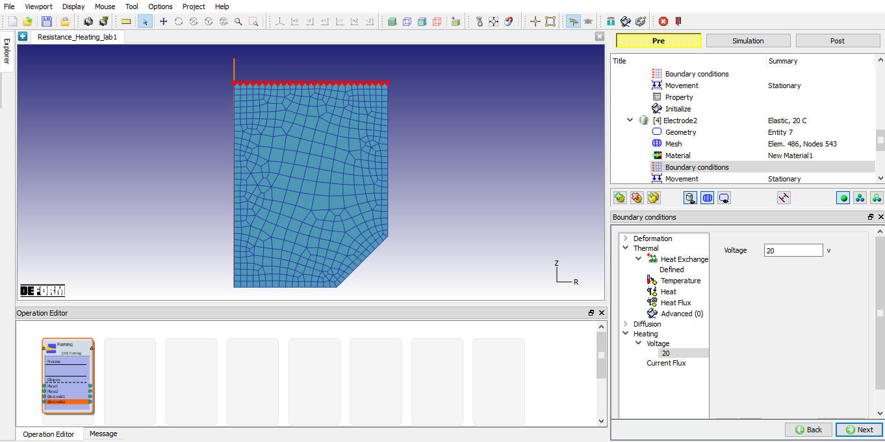
Voltage BCC definition
Temperature BCC Definition
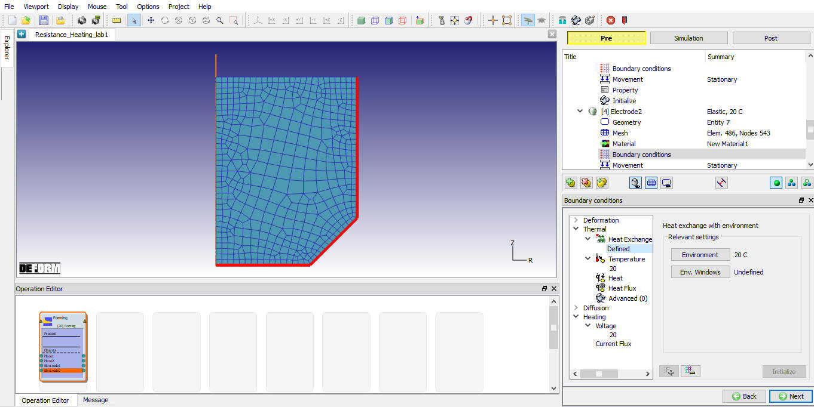
Defining Heat exchange with environment BCC
In contact page, add ( ) three relation sets. (See Fig. 2DRHL1.25.)
Set the bottom plate as master, top plate as slave for the first set, complete the second and third sets with electrodes as masters and plates as slaves. (eg. bottom electrode as master and bottom plate as slave). For the first set of objects specify
0.002 as interface heat transfer coefficient (click on
) three relation sets. (See Fig. 2DRHL1.25.)
Set the bottom plate as master, top plate as slave for the first set, complete the second and third sets with electrodes as masters and plates as slaves. (eg. bottom electrode as master and bottom plate as slave). For the first set of objects specify
0.002 as interface heat transfer coefficient (click on 
 thermal) and 40 as the interface resistivity value (click on
thermal) and 40 as the interface resistivity value (click on 
 ‘Heating’), (see Fig. 2DRHL1.26. and Fig. 2DRHL1.27.).
‘Heating’), (see Fig. 2DRHL1.26. and Fig. 2DRHL1.27.).
For second and third relation define 0.002 as interface heat transfer coefficient (click on 
 Thermal) and 40 as the interface resistivity value (click on
Thermal) and 40 as the interface resistivity value (click on 
 ‘Heating’). Click on
‘Heating’). Click on  to define the contact tolerance and click
on
to define the contact tolerance and click
on  button to generate the contact. Click on
button to generate the contact. Click on  until step controls page.
until step controls page.
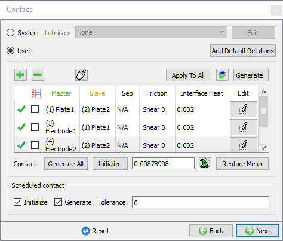
Contact generation window
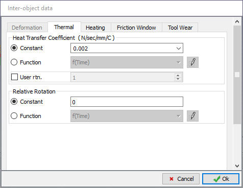
Setting Inter object Heat Transfer coefficient data
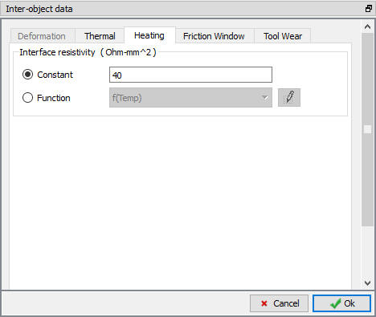
Setting Inter-object Interface resistivity data
Select Number of simulation steps as 100, and Step increment to save as 10, with
an equal time increment as 0.05 sec (see Fig. 2DRHL1.28.).
Click on  .
.
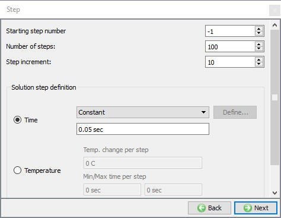
Step controls window
Click on  action label to check the problem. Generate a database by clicking
action label to check the problem. Generate a database by clicking  action label.
action label.
Once the database has been generated switch to the Simulation mode by selecting the  button above the object tree.
button above the object tree.
Once the database has been generated switch to the Simulation mode by clicking on  button above the operation tree. Click on the
button above the operation tree. Click on the  action label to open the Run Options dialog as shown in Fig. 2DRHL1.29. Use the default Continue Run option
to select “Continue from the last step” (from step -1) option and then select the Simulation mode as Interactive radio button and click on
action label to open the Run Options dialog as shown in Fig. 2DRHL1.29. Use the default Continue Run option
to select “Continue from the last step” (from step -1) option and then select the Simulation mode as Interactive radio button and click on  button to run the simulation.
button to run the simulation.
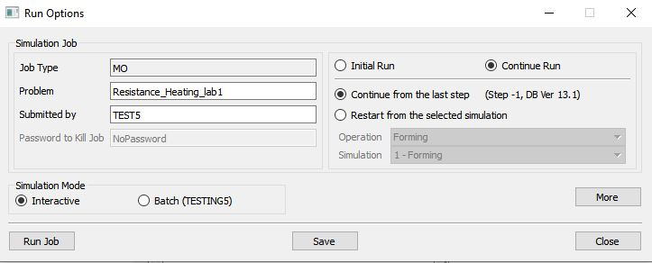
Run simulation window
The progress of the simulation can be monitored as it is running by looking at the Simulation Message and process monitor in Simulation mode. Click the Simulation Message tab to view the Message file. As long as the  option is checked, which is the default setting, the Message file will refresh every couple of seconds.
option is checked, which is the default setting, the Message file will refresh every couple of seconds.
The Message file provides information about which simulation step the simulation is currently on and also gives information dealing with how well the simulation is running.
When the simulation has finished, the message will be added to the end of the Message file.(See Fig. 2DRHL1.30.).
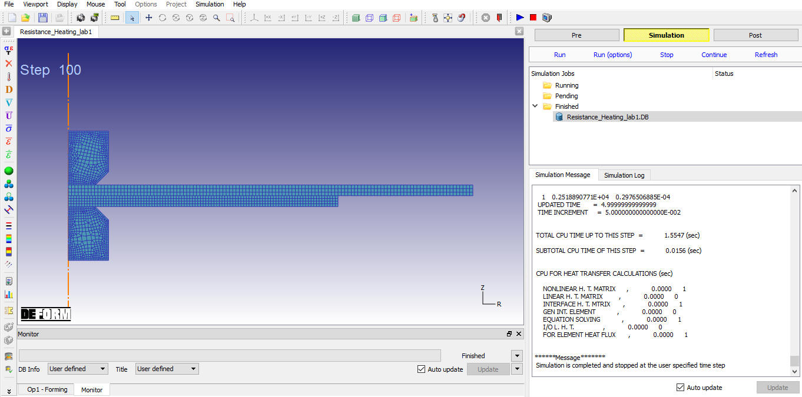
Simulation tab
When the simulation has finished, click on  . In Step Browser click on
. In Step Browser click on  button to view all steps. Plot the Temperature,
Voltage and Elemental current Flux state variables to see the model results of current flux, Temperature distribution and Voltage.
button to view all steps. Plot the Temperature,
Voltage and Elemental current Flux state variables to see the model results of current flux, Temperature distribution and Voltage.
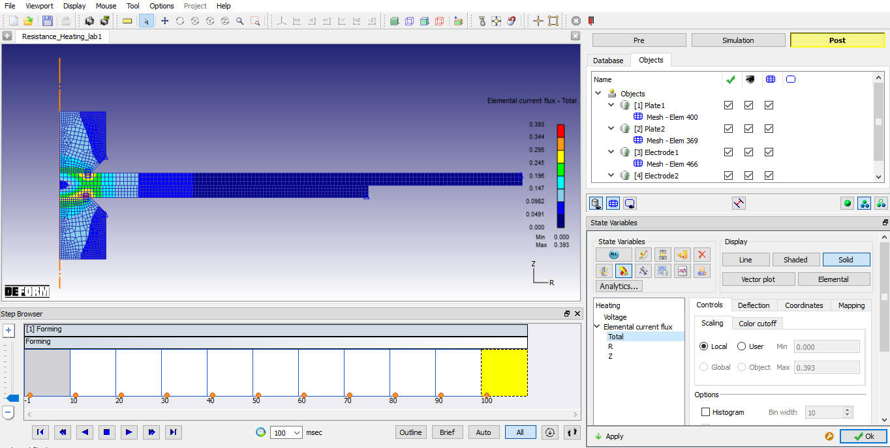
Elemental Current Flux state variable
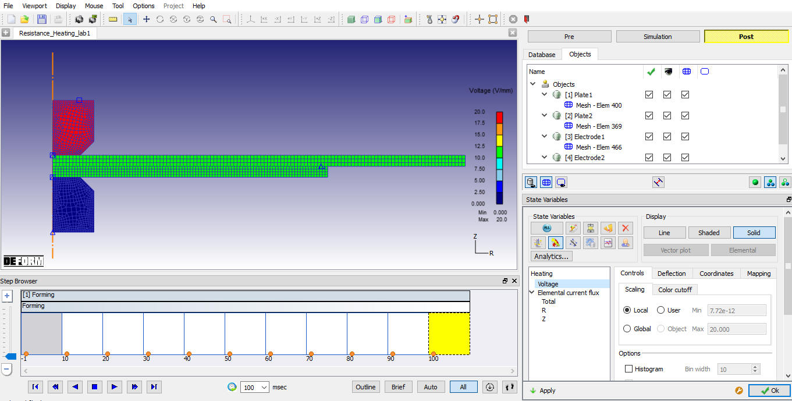
Voltage state variable
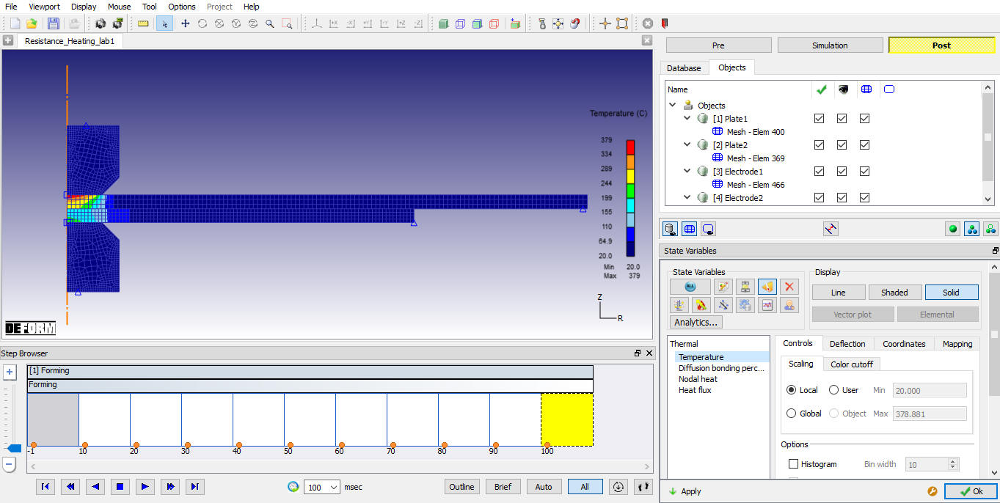
Temperature Distribution in the Plates